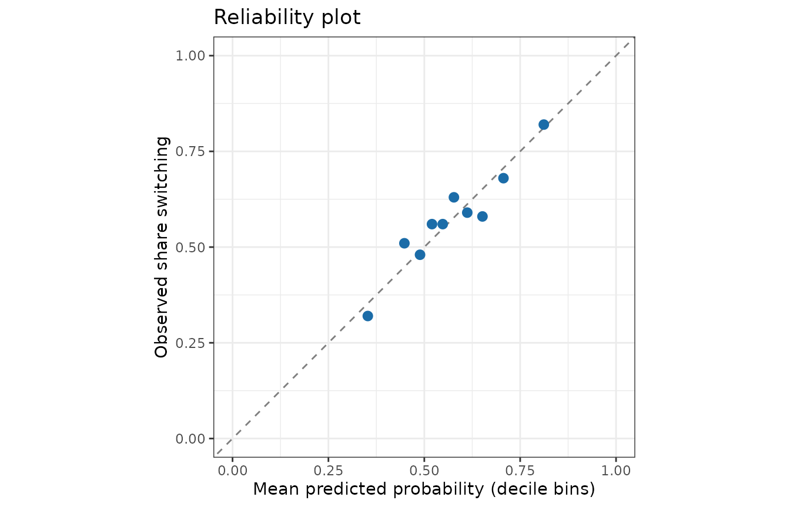

Predictive evaluation with proper scoring rules
Source:vignettes/articles/predictive-evaluation.Rmd
predictive-evaluation.RmdA Bayesian model predicts a distribution, not a number.
Scoring only the posterior mean (RMSE, accuracy) ignores whether the
model’s uncertainty is honest. Proper scoring rules
reward a forecast for being both accurate and calibrated: they are
optimised in expectation only by reporting your true predictive
distribution (Gneiting & Raftery, 2007).
evaluate_model_performance() reports:
| Metric | Outcome | Better | Notes |
|---|---|---|---|
ELPD |
all | higher | log predictive density on the test set; the out-of-sample analogue
of elpd_loo
|
CRPS |
continuous / count | lower | in the units of the outcome; reduces to absolute error for a point forecast |
Brier |
binary | lower | mean squared error of predicted probabilities |
Coverage |
continuous / count | ≈ prob
|
calibration of the predictive intervals |
AUC |
binary | higher | discrimination only (not a proper score) |
RMSE, MAE, Accuracy,
Precision, Recall, F1_Score
|
familiar point-prediction metrics |
Binary outcomes: the wells data
data(wells, package = "rstanarm")
wells$dist100 <- wells$dist / 100
set.seed(123)
test_rows <- sample(nrow(wells), 1000)
train <- wells[-test_rows, ]
test <- wells[test_rows, ]
fit_dist <- fit_model_with_prior(train, switch ~ dist100, family = binomial(),
refresh = 0)
fit_full <- fit_model_with_prior(train, switch ~ dist100 + arsenic + educ,
family = binomial(), refresh = 0)
perf_dist <- evaluate_model_performance(fit_dist, test)
perf_full <- evaluate_model_performance(fit_full, test)
perf_full
#> <bmb_performance> classification, 1000 test observations
#> ELPD (log score, higher = better) -652
#> SE of ELPD 9.14
#> ELPD per observation -0.652
#> Accuracy (threshold 0.5) 0.611
#> Precision 0.629
#> Recall 0.784
#> F1 score 0.698
#> Brier score (lower = better) 0.23
#> AUC 0.635Classification metrics are computed from the posterior mean
probability of switching, thresholded at 0.5 (see
threshold). Accuracy alone can hide a lot: the Brier score
and ELPD also penalise overconfident probabilities.
Comparing models on the same test set
Because both models are scored on the same households, the difference in ELPD should be assessed with the standard error of the paired (per-observation) differences, not by comparing the two ELPDs and their separate standard errors:
compare_performance(distance_only = perf_dist, full = perf_full)
#> model elpd elpd_diff se_diff
#> 1 full -652.0737 0.00000 0.000000
#> 2 distance_only -678.7845 -26.71073 6.950787A difference of several standard errors is a clear improvement.
Calibration
For a calibrated model, among households given a predicted probability of about 0.7, about 70% should switch. A reliability plot checks this:
p <- colMeans(rstanarm::posterior_epred(fit_full, newdata = test))
bins <- cut(p, breaks = quantile(p, 0:10 / 10), include.lowest = TRUE)
calib <- data.frame(predicted = tapply(p, bins, mean),
observed = tapply(test$switch, bins, mean))
ggplot(calib, aes(predicted, observed)) +
geom_abline(linetype = "dashed", colour = "grey50") +
geom_point(size = 2.5, colour = "#1b6ca8") +
coord_equal(xlim = c(0, 1), ylim = c(0, 1)) +
labs(x = "Mean predicted probability (decile bins)", y = "Observed share switching",
title = "Reliability plot") +
theme_bw()
Continuous outcomes
For continuous outcomes the CRPS and interval coverage complement RMSE:
data(kidiq, package = "rstanarm")
set.seed(1)
test_rows <- sample(nrow(kidiq), 100)
fit_kid <- fit_model_with_prior(kidiq[-test_rows, ], kid_score ~ mom_iq * mom_hs,
refresh = 0)
evaluate_model_performance(fit_kid, kidiq[test_rows, ], prob = 0.9)
#> <bmb_performance> regression, 100 test observations
#> ELPD (log score, higher = better) -436
#> SE of ELPD 6.98
#> ELPD per observation -4.36
#> RMSE of posterior mean 18.9
#> MAE of posterior mean 15.4
#> CRPS (lower = better) 10.8
#> Coverage of 90% predictive intervals 0.9
#> Mean interval width 58.8Coverage close to the nominal 90% means the predictive intervals are about the right width; much lower coverage signals overconfidence.
Held-out data or LOO?
When no test set is available, PSIS-LOO cross-validation (Vehtari et al., 2017) estimates the same ELPD from the training data alone:
loo::loo(fit_full)
#>
#> Computed from 4000 by 2020 log-likelihood matrix.
#>
#> Estimate SE
#> elpd_loo -1307.6 13.5
#> p_loo 4.2 0.2
#> looic 2615.2 27.0
#> ------
#> MCSE of elpd_loo is 0.0.
#> MCSE and ESS estimates assume independent draws (r_eff=1).
#>
#> All Pareto k estimates are good (k < 0.7).
#> See help('pareto-k-diagnostic') for details.workflow_report() reports LOO automatically and includes
held-out metrics when you pass them via performance =.
References
Brier, G. W. (1950). Verification of forecasts expressed in terms of probability. Monthly Weather Review, 78(1), 1–3.
Gneiting, T., & Raftery, A. E. (2007). Strictly proper scoring rules, prediction, and estimation. JASA, 102(477), 359–378.
Vehtari, A., Gelman, A., & Gabry, J. (2017). Practical Bayesian model evaluation using leave-one-out cross-validation and WAIC. Statistics and Computing, 27(5), 1413–1432.